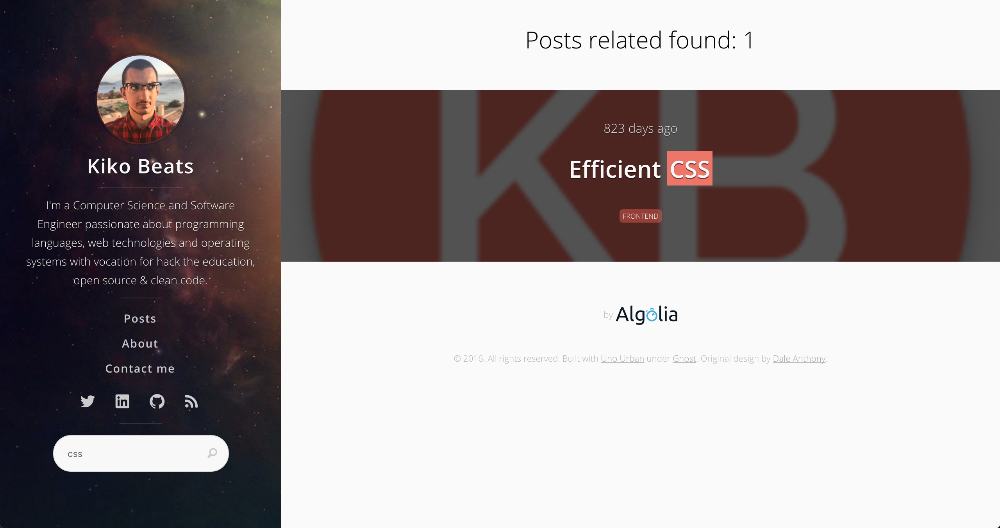

Currently search engine is powered by Algolia.
Because it depends of the blog content and the content is different per each blog installation, you need to setup it following the next steps.
Algolia is a full text search engine. It offers a free plan, so we going to use it for create a intelligent index search of our content.
For do it, first need to create an account.
Using the account created, now we have to create an application domain:
Next step is create an index in the application domain.
Click in the lateral menu into Indices and New Index
After that, we need to create a token with enough permissions or use Admin API Key.
Click in the lateral menu into API Keys and New API Key
Now we have all the information to be possible connect with your index. This information are:
We are going to use it for connect with your blog content.
Rename and edit search.example.json into search.json.
You need to setup your information from your Algolia index.
Also, you need to setup two things more:
The content of the sitemap of your blog will be indexed by Algolia.
For do that, you have to specify it as:
"sitemaps": [
{"url": "https://YOUR_DOMAIN/sitemap-posts.xml"},
{"url": "https://YOUR_DOMAIN/sitemap-pages.xml"}
],
We are going to index a set of attributes per each post. If not possible to determinate a value for one attribute, we can specify a default values.
It's recommended to setup the follow default values:
"defaults": {
"image": "https://YOUR_DOMAIN/assets/img/android-chrome-192x192.png",
"category": "uncategorized"
}
After that, run gulp build-search and the task will index your content.